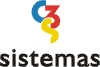

EQUIPE TÉCNICA
Prof. MSc. Clara Luiza Miranda
COORDENAÇÃO
Augusto Alvarenga
Dra. Myriam Bahia Lopes
PESQUISADORES
Isabel Frota de Abreu (FACITEC)
Gislaine Zanon Ferreira (UFES)
BOLSISTAS DE INICIAÇÃO CIENTÍFICA
Ellen Motta Assad
Bruno Casotti Louzada
ESTÁGIÁRIOS

C3s Sistemas
INFORMÁTICA
Laboratório de Planejamento e Projetos CAR - UFES
Laboratório de Informática CAR - UFES
Núcleo de Imagem, Produção e Pesquisa CAR - UFES
APOIO LOGÍSTICO
Prefeitura Municipal de Vitória
Fundo de Apoio à Ciência e à Tecnologia (FACITEC)
FINANCIAMENTO
DESENVOLVIMENTO
Elaboração do Projeto
Myriam Bahia Lopes
Augusto Alvarenga
Clara Luiza Miranda
Banco de dados e home page
C3s Sistemas
Augusto Alvarenga
Isabel Frota de Abreu
Levantamento de fontes
Isabel Frota de Abreu
Bruno Casotti Louzada
Clara Luiza Miranda
Ellen Motta Assad
Myriam Bahia Lopes
Reprodução fotográfica
Clara Luiza Miranda
Rosana Najjar
Isabel Frota de Abreu
Roberto Martins Cassani
Digitalização e tratamento de imagens
Isabel Frota de Abreu
Bruno Casotti Louzada
Gislaine Zanon Ferreira
Cadastramento de imagens e informações no banco de dados
Isabel Frota de Abreu
Bruno Casotti Louzada
Gislaine Zanon Ferreira
Logomarca
Isabel Frota de Abreu
Design da home page
Augusto Alvarenga
Isabel Frota de Abreu
COLABORAÇÃO
Clara Luiza Miranda
Ellen Motta Assad
Elaudia Lima Dan
Luciano Aguiar
Ana Cláudia Berwanger
Gislaine Zanon Ferreira
C3s Sistemas
Confecção dos mapas
Isabel Frota de Abreu
Bruno Casotti Louzada
Augusto Alvarenga
Pesquisa histórica
Clara Luiza Miranda
Ellen Motta Assad
Textos
Clara Luiza Miranda
Ellen Motta Assad
Gislaine Zanon Ferreira
Revisão Histórica
Fernando Antônio Morais Achiamé
FONTES PESQUISADAS
Biblioteca Paulo Vieira Bossi - CAR-UFES, Instituto do Patrimônio Histórico e Artístico Nacional - 6ª Sub-Regional/ES, Setor de Coleções Especiais da Biblioteca Central da Universidade Federal do Espírito Santo, Biblioteca do Instituto Jones dos Santos Neves, Arquivo Geral do Município de Vitória, Arquivo Público Estadual do Espírito Santo, CDA e CDU da Secretaria de Desenvolvimento Urbano da Prefeitura Municipal de Vitória, Fóton Imagens, Museu Solar Monjardim - UFES, Companhia Docas do Espírito Santo (CODESA), Núcleo de Arquitetura e Urbanismo do Centro de Artes da UFES (NAU).
Fundação Biblioteca Nacional - Divisão de Iconografia, Arquivo Histórico do Exército, 5ª Divisão de Levantamento do Exército, Mapoteca do Ministério das Relações Exteriores (Itamaraty), Serviço de Documentação da Marinha, Instituto Histórico e Geográfico Brasileiro.
COLABORADORES
Anna Graça Braga de Abreu, Francisco Morais, Kleber Perini Frizzera, Janaína Barros Souza, Roberto Martins Cassani, Ana Cláudia Berwanger, Sr. Cesar Naime (ES), Rosana Najjar (RJ), Xerox do Brasil, Sr. Nilton Pimenta, Fernando Antônio Morais Achiamé.
AGRADECIMENTOS
Aos funcionários de todas as instituições colaboradoras, em especial Maria da Conceição sjflgkj (IJSN), Carol de Abreu (IPHAN), Marta dfkjb (BCUFES), Leopoldina cdsr (BCAR), Maria Dulce de Faria e Joaquim Marçal de Andrade (FBN).
A Rosanna Najjar, pela reprodução de mapas, ao Francisco Morais pelo material cedido.
Aos historiadores e urbanistas
Saturnino de Brito, Maria Stella de Novaes, José Teixeira de Oliveira, Elmo Elton, Luis Serafim Derenzi, Levy Rocha, Nara Saletto, Maria da Penha Siqueira, Almerinda da Silva Lopes, Jair Santos, Carlos Teixeira Campos Junior, Carlos Benevides Lima Junior, Suely Carvalho Soares, Wallace Bonicenha, Patrícia Sepulcri, Renata Hermanny de Almeida, NAU, Luciana Lira Santos, Kleber Perini Frizzera, Roberto Garcia Simões, André Abe, Rogério Almenara Ribeiro, Edésio Caldeira Filho e aos alunos e professores do curso de Arquitetura da UFES cujos trabalhos foram utilizados em nossa pesquisa.